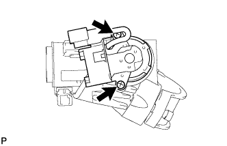
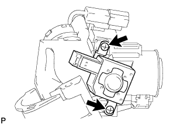
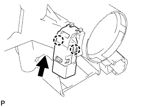
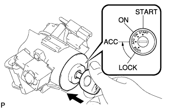
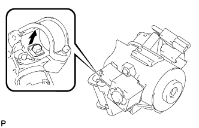
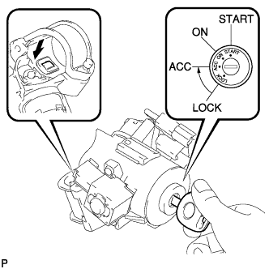
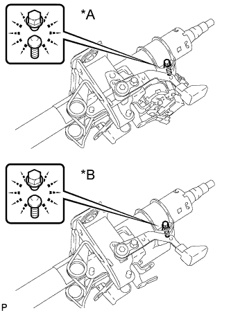

РУЛЕВАЯ КОЛОНКА В СБОРЕ (для моделей с наклонной телескопической рулевой колонкой с ручным приводом) > ПОВТОРНАЯ СБОРКА |
| 1. УСТАНОВИТЕ ЖГУТ ПРОВОДОВ СОЛЕНОИДА БЛОКИРОВКИ КЛЮЧА (для моделей без системы посадки и запуска) |
Установите жгут проводов соленоида блокировки ключа на замок зажигания.
| 2. УСТАНОВИТЕ ЗАМОК ЗАЖИГАНИЯ (для моделей без системы посадки и запуска) |
|  |
Установите замок зажигания на верхний кронштейн рулевой колонки и закрепите его 2 винтами.
| 3. УСТАНОВИТЕ СОЛЕНОИД БЛОКИРОВКИ КЛЮЧА (для моделей без системы посадки и запуска с автоматической трансмиссией) |
|  |
Установите соленоид блокировки ключа на верхний кронштейн рулевой колонки и закрепите его 2 винтами.
Подсоедините разъем.
| 4. УСТАНОВИТЕ ВЫКЛЮЧАТЕЛЬ РАЗБЛОКИРОВКИ КЛЮЧА В СБОРЕ (для моделей без системы посадки и запуска) |
|  |
Введите в зацепление 2 захвата для установки выключателя разблокировки ключа на верхнем кронштейне рулевой колонки.
| 5. УСТАНОВИТЕ ЦИЛИНДР ЗАМКА ЗАЖИГАНИЯ В СБОРЕ (для моделей без системы посадки и запуска) |
Включите зажигание (ACC).
|  |
Установите замок зажигания в верхний кронштейн рулевой колонки.
Убедитесь, что цилиндр замка зажигания надежно закреплен на цилиндре замка зажигания.
| 6. ПРОВЕРЬТЕ РАБОТУ БЛОКИРОВКИ РУЛЕВОЙ КОЛОНКИ (для моделей без системы посадки и запуска) |
|  |
Достаньте ключ и проверьте, происходит ли включение блокировки рулевого управления.
|  |
Вставьте ключ, включите зажигание (ACC) и убедитесь, что блокировка рулевого управления выключается.
| 7. УСТАНОВИТЕ ПРИВОД БЛОКИРОВКИ РУЛЕВОГО УПРАВЛЕНИЯ В СБОРЕ |
Временно закрепите привод блокировки рулевого управления в сборе новым болтом с конической головкой.
|  |
Затягивайте болт с конической головкой, пока головка болта не свернется.
| *A | для моделей без системы посадки и запуска |
| *B | для моделей с системой посадки и запуска |